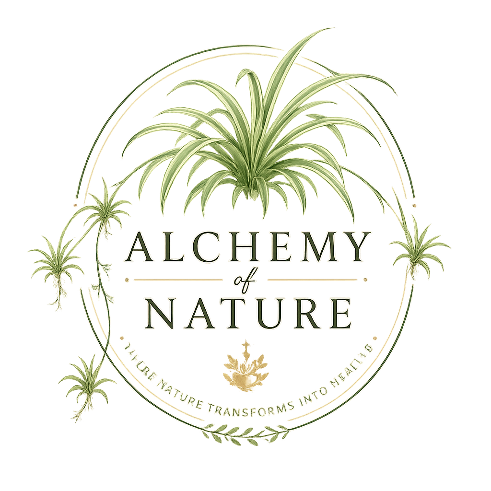

31 healing recipes, grouped by what your body needs.
Three offered freely. The rest for those ready to go deeper. A 30-day reset plan for those who want the full journey.
Explore the Recipes ↓“In 2022, I ended a ten-year relationship and began a healing journey in the same breath. I didn’t set out to lose weight. I set out to come back to myself. My body simply followed.”
Read the full story →The beginning of every healing journey. Preparations that clear the liver, gut, blood, and lymph so the body can do its own work.
The tea that began everything. Drunk slowly before the world asks anything of you — a daily ritual of gentle beginning.
IngredientsFor clarity, focus, and rebuilding what depletion has quietly taken. The body needs fuel that actually feeds it.
For the days your body is asking for more, not less. Rich in plant iron and minerals that rebuild what depletion has taken.
IngredientsPreparations that activate the body’s own defence. At the first sign of illness and through every season.
From within and without. Preparations that clear, brighten, and restore what stress, diet, and time have taken from the skin.
Rinses, oils, and treatments rooted in traditional African and natural medicine — for growth, strength, and scalp health.
When the gut settles, everything else follows. Simple preparations that calm, coat, and restore the body’s most underestimated system.
The body heals in stillness. These preparations create the conditions for deep, restorative rest and a nervous system that is no longer running on alert.
The day asks everything of us. This tea asks nothing. It simply holds the space between what has been and what will come.
IngredientsSize 42 to 36 in three months. Not through restriction — through returning to simplicity. The 30-Day Reset is that protocol, written down for those who are ready for their own return.